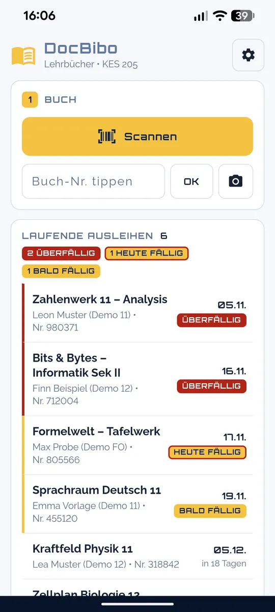
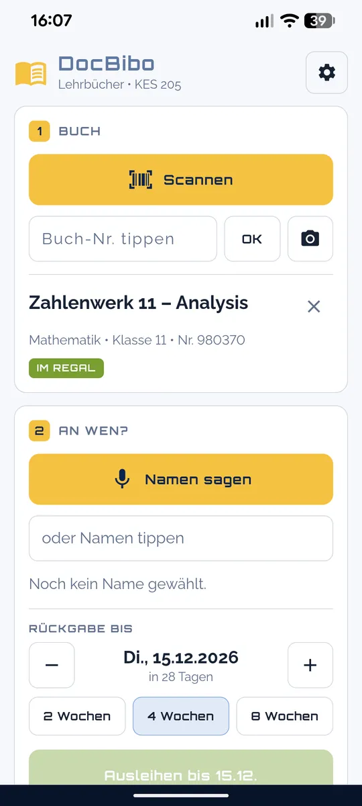
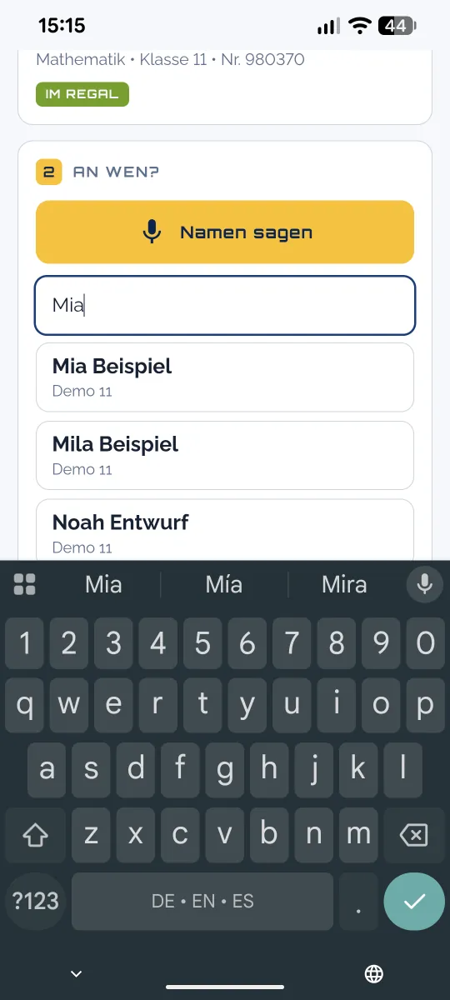
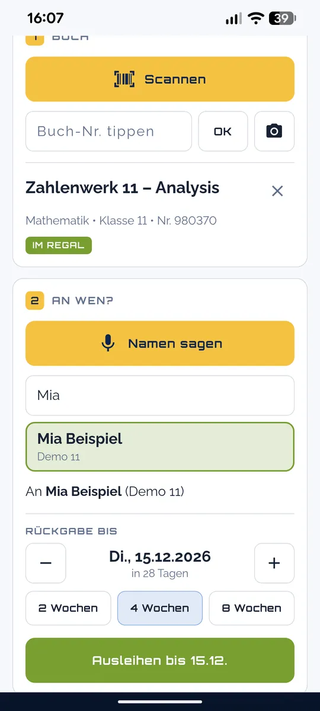
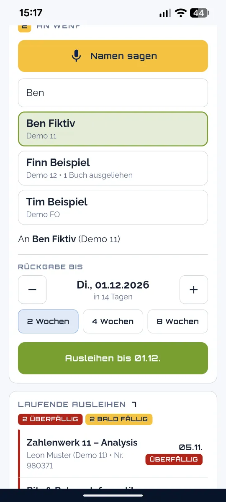
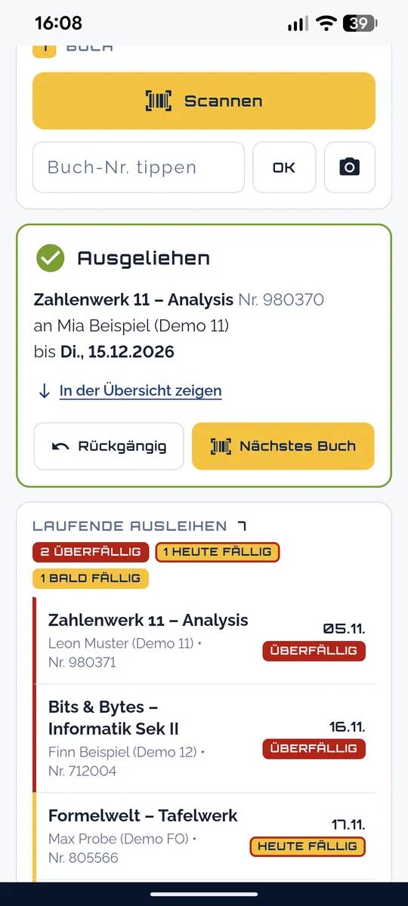
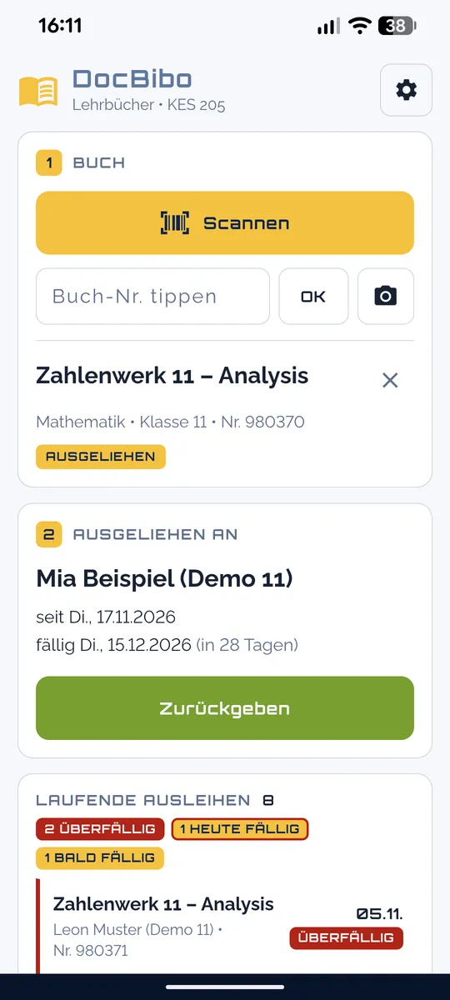
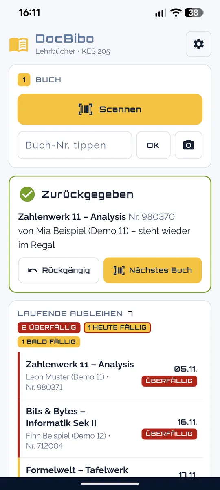
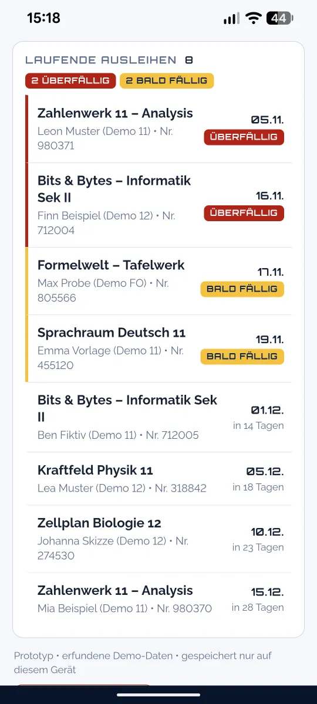

Good morning!
Nur das Schöne wird die Welt retten!
Fjodor Dostojewski
Nicht verzagen, Doc Alvers fragen!
Schulbibliothek · KES 205
Scannen, Namen sagen, fertig: die Ausleih-App für unsere Lehrbücher
Nicht verzagen, Doc Alvers fragen!
Bisher
Buchnummer auf einen Zettel notieren
Im Programm den Schüler suchen
Sechsstellige Nummer eintippen
Viele Fenster, Felder mit unpassenden Vorgaben
Mit DocBibo
Barcode mit dem Smartphone scannen
Namen sagen oder tippen
Ausleihen tippen – fertig
Die Frist steht schon da: 4 Wochen
Nicht verzagen, Doc Alvers fragen!
Ausleihen · Schritt 1 von 3
Scannen tippen und die Kamera auf den Barcode halten
Oder die sechsstellige Nummer tippen
Das Buch erscheint sofort: Titel, Fach, Klasse
Mit Stand: im Regal oder schon ausgeliehen


Nicht verzagen, Doc Alvers fragen!
Ausleihen · Schritt 2 von 3
Namen sagen oder die ersten Buchstaben tippen
DocBibo zeigt bis zu drei Treffer
Treffer antippen – die Frist steht schon: 4 Wochen
Grüner Knopf: Ausleihen bis 15.12.


Nicht verzagen, Doc Alvers fragen!
Ausleihen · Schritt 3 von 3
Andere Frist: 2, 4 oder 8 Wochen
Oder tageweise mit − und +
Ein Tipp auf Ausleihen – die grüne Meldung sagt was, an wen, bis wann
Vertippt? Rückgängig
Der Nächste: Nächstes Buch


Nicht verzagen, Doc Alvers fragen!
Rückgabe
Das Buch scannen – DocBibo zeigt, an wen es ausgeliehen ist und bis wann
Zurückgeben tippen – das Buch steht wieder im Regal
Auch hier geht Rückgängig


Nicht verzagen, Doc Alvers fragen!
Laufende Ausleihen
Unter dem Scannen: alle laufenden Ausleihen, die frühesten Rückgaben zuerst
Rot: überfällig
Gelb: heute oder in den nächsten 3 Tagen fällig
Grün mit NEU: die Ausleihe von eben
Mit Namen und Buchnummer – ein Blick genügt

Nicht verzagen, Doc Alvers fragen!
docalvers.de/bibo öffnen – oder den QR‑Code scannen
Android: Chrome → Menü ⋮ → App installieren
iPhone: Safari → Teilen → Zum Home-Bildschirm
Danach startet DocBibo wie jede App vom Startbildschirm
Kamera und Mikrofon einmal erlauben – fürs Scannen und den Namen
docalvers.de/bibo
Nicht verzagen, Doc Alvers fragen!
Heute
Ein Prototyp mit erfundenen Demo-Daten
Jedes Gerät hat noch seinen eigenen Stand
Läuft auf Android, iPhone und am Rechner
Als Nächstes
Meine Bücher: Schüler sehen ihre Bücher und verlängern selbst
Erinnerung vor der Frist, per Mail oder Teams
Übernahme der Bücher und Schüler aus dem alten Programm
Datenschutz klären – vor dem Echtbetrieb
Nicht verzagen, Doc Alvers fragen!